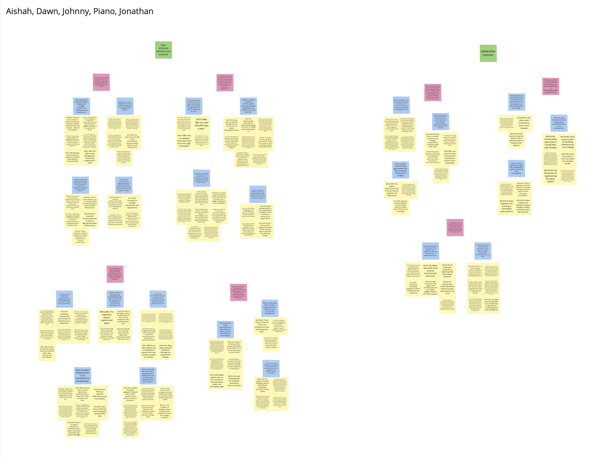

Qualitative Research - Analysis of the problems with Michigan Municipalities in Collecting, Analyzing, and Sharing data of Aging Water Infrastructures
Project Information
Overview: Our group spent three months studying the problems of Michigan municipalities collecting, standardizing, and sharing data with each other. We first explained what our research questions were and why they were worth studying. Then we described the methods we used to collect data from different parties over the past few months. We summarized the insights that we got from the data. Because we know that existing research is not sufficient to solve these problems, we discussed how we would further address the issues if we had unlimited time and resources. Finally, we concluded the most important points of our study.
Project Type: Group Project
Duration: 9/2023 - 12/2023
Skills: Qualitative Research, Miro, Affinity Work, Google Products
Problem Statement

Michigan's water infrastructure suffers from a lack of standardized data across municipalities, making it difficult to assess and improve quality and safety. Many systems are outdated and suffer from poor record-keeping and underfunding, hindering effective communication and resource allocation. Some areas with excellent data show potential for statewide improvement.
Background Research
We reviewed literature on Michigan's aging water infrastructure and the challenges in collecting data to assess its condition. The infrastructure is in poor shape and mostly unrecorded because it was built before the digital age, making it hard to analyze its current state and address issues like old pipes and health risks. The absence of detailed records and difficulties in data gathering make solving these problems tough. Poor communication between different municipalities also worsens the situation, causing the infrastructure to deteriorate even faster. Better collaboration and data collection are crucial to manage these aging infrastructures and prevent further damage.
Research Questions

What are the methods different municipalities are using to assess water infrastructure quality, including maintenance and replacement needs? Where is this succeeding or failing?

In the process of collecting data on water infrastructure, how can the measuring and sharing of information between different municipalities be enhanced? If so, what is it?
Process
The progress of the entire project is shown below
- To find enough evidence to support our problem statement to be worth investigating and to better identify what current issues are severe, we first did some research on Google Scholar and various water service websites. We found ten sources in total and created a Google sheet to help us summarize those results and found what is important and points of overlap. With these results, we were able not only to specify the issues we wanted to study but also to generate more relevant questions for our interviews.
- Additionally, each member of our group selected a subject matter expert (SME) video interview and to conduct analysis on. We used this opportunity to practice asking questions and taking notes in the interview. We shared what we found in those video interviews and saw which ideas were relevant to aging water infrastructure and our research question. Additionally, each member participated in SME interviews with various stakeholders. Johnny attended the Zoom interview with Molly Maciejewski, Dawn attended the Zoom interview with Noah Urban, and the rest of group members attended the Zoom interview with Evan Pratt. We tried to find what was relevant to our topic throughout the interview process, but kept ourselves open to exploring other newly-discovered points of interest. For example, consolidation of not just the data, but of the literal water infrastructure itself was posed several times by interviewees. This was a more contentious point as we had collected conflicting opinions.
- To obtain more firsthand information, we conducted interviews with various professional stakeholders from the City of Ann Arbor and EGLE. We finished an interview protocol so we could ask questions in a more logical way in the interviews. The whole team was present when we conducted a contextual interview with an employee from the City of Ann Arbor water plant. Dawn and Jonathan were the interviewers. The rest of our group members took notes and uploaded our notes to Google Drive so we could all compare and review them later. Dawn and Aishah went to a joint interview with staff from EGLE, which helped reinforce prior observations regarding water infrastructure consolidation.
- After we collected all of the data from various parties, we started working on our affinity wall via Miro. We extracted the core ideas from different sources and summarized them in one sentence, then wrote them on yellow sticky notes. After that, we roughly categorized them. Next, we went over and discussed whether each categorization is reasonable together, and made adjustments accordingly. We wrote a sentence to summarize each category on a blue sticky note. Then we conducted the second categorization and used pink sticky notes to summarize them. Finally, we divided pink sticky notes into two parts and used green sticky notes to mark their differences. All of these works allowed us to find what was in common and what was important, and therefore we could present our findings to others. 
Findings/Insights
We found that Michigan collects and stores robust amounts of data regarding some aspects of water infrastructure but does not fully analyze all of it, whereas there are gaps in other kinds of data, like comprehensive data relating to the locations and current statuses of all water infrastructure in Michigan. According to a contextual interview we conducted with an employee of the Ann Arbor Water Department, Michigan currently has three main ways for collecting and storing data. First is a status system, which is an interface between operator and equipment. The state monitors and stores data acquired through the system in databases. They use the data for treating water and maintaining the distribution system. Additionally, the state monitors the 170,000 water tests related to quality and contamination annually. They generate reports based on the results, which are available to the public. Lastly, Michigan has a database that stores equipment records, maintenance records, staffing information, engineering plans, and GIS information.
However, the contextual interview revealed that there is not enough analysis done on the data, despite the size of the databases. It was mentioned that there is a need for further analysis to get the full utility out of the data. Next step is to investigate the types of analysis that will benefit the water department and to devise methods to implement those analyses. Additionally, other aspects of water infrastructure data are lacking and have significant gaps. For example according to Eric Lupher, Robert Schneider, and Eric Paul Dennis in Michigan's Path to a Prosperous Future: Infrastructure Challenges and Opportunities, “it will likely require decades of focused attention to attain an appropriate understanding of water infrastructure in Michigan,” due to these gaps in data and according to Olivia Rath in State of the State: Michigan's Infrastructure, "a lack of clear, publicly available and aggregated information about water infrastructure assets has impeded strategic maintenance and replacement.”
Another finding is that water infrastructure data can't always be standardized, nor is it always helpful for it to be standardized. Some point out that the state lacking a central repository of information about system size, water production and rates (Walton), and having “coordinated data aggregation can inform a systematic approach to” water infrastructure maintenance (Rath). Despite the supportive stance on the standardization of data, the interviewee in the contextual interview mentioned that there is no one size fits all template for data because every project is different. A balance should be struck between standardization for ease of access and customization to better elaborate on specific circumstances.
We also discovered that there are two main ways for water departments to select infrastructure for repair and maintenance, based on priority, according to our interview with an employee of the Ann Arbor Water Department. One is based on failures such as main breaks. If the data monitored by organizations shows pipes are in disrepair and need to be replaced, they get put on capital improvement projects. They assess the highest priorities to plan the financial matters. The other way is based on water quality. Contaminated water suggests decay in water pipes, and the water department decides to replace them. Decisions regarding repair and maintenance are made based on cost analysis. Whether it is cheaper to repair or replace will vary.
A finding about communication across municipalities is that there are research databases made available by the Water Research Foundation and American Waterworks Foundation as well as their local Michigan chapter. They collect data from research done by different municipalities. When organizations have projects they want to carry out, they can first take a look at the research databases to save time and resources. When facing issues, municipalities can also communicate with individual consultants and engineers who have worked for different water departments in addition to theirs.
Lastly, we learned that while the Department of Environment, Great Lakes, and Energy (EGLE) recommends consolidation of water infrastructure, some are skeptical of this. The article by Natasha Blakely pointed out the population size in some municipalities is decreasing in spite of the initial expectation that it would grow bigger. In order to support the oversized water infrastructure, EGLE advocates for sharing resources between municipalities who are financially struggling to maintain their own by themselves. On the other hand, we cannot ignore that having a large distribution area creates a risk, as mentioned in our contextual interview with the Ann Arbor Water Department employee. With a larger consolidated area of water service, single problems will affect a larger amount of the population. Furthermore, pumping water throughout a bigger distribution area is expensive. The contextual interview further emphasized that states have to evaluate the financial benefit of infrastructure consolidation against the potential risk.
Next Steps

Our project revealed significant insights but was not extensive enough to provide concrete recommendations. If given more time and resources, we'd conduct more interviews with a broader range of stakeholders to resolve conflicting opinions and understand different perspectives better. Additionally, we aim to access and delve deeper into two key databases—the American Water Works Association and the Water Research Foundation—to improve our interview questions. Lastly, exploring how transparency in infrastructure data affects funding decisions would help us gain a deeper understanding of the issues from all stakeholders' viewpoints.
Conclusion
Through our data collection, we learned about some of the reasons why Michigan's water infrastructure is so unknown when it comes to its quality. We discovered a lack of comprehensive data when it comes to said quality, and that municipalities do already try their best to communicate findings with each other in indirect ways, such as through reporting databases they can publish to. We also found out data and infrastructure consolidation can yield contrary opinions. Some stakeholders are largely in favor, and some exhibit a request for caution. After reviewing our interview pool and data sources, we realized a lack of diverse stakeholders was a potential issue for missing parts of the whole picture. We determined that obtaining more stakeholder perspectives from water customers and political leaders would be paramount in furthering our project. We also figured that getting access to the two popular databases and observing user workflows through them would be invaluable for further exploration. Ultimately, there are clear efforts by various stakeholders to improve Michigan's water infrastructure. Having learned of the different aspects that Michigan water infrastructure is more ahead than we had previously thought, we feel more eager than wary about the future of Michigan's water infrastructure.